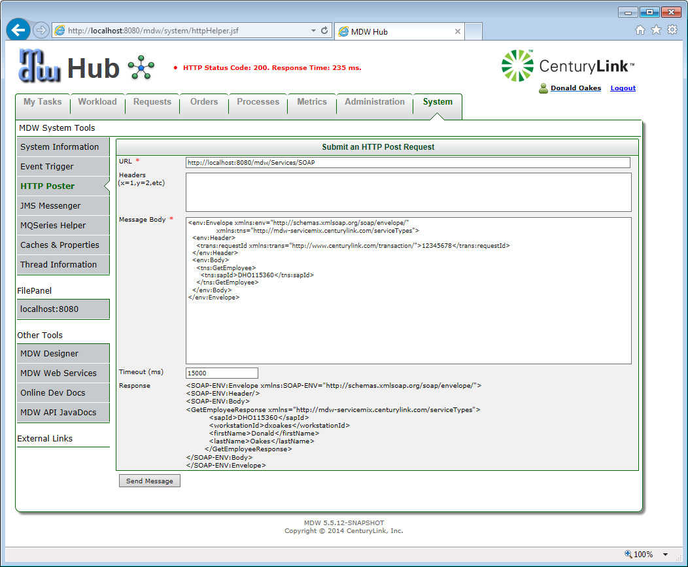

The MDW framework provides a platform for deploying and consuming two different types of Web Services: simple RESTful services and traditional SOAP-based services. Using either protocol, you can leverage MDW to invoke a service from within your workflow process, or to expose a service that's implemented as a realtime workflow process.
REST services require less overhead and are easier to implement. SOAP-based services provide compatibility with established industry standard web service protocols. Either way, if you follow the MDW patterns (ExternalEventHandlers for incoming service requests, and Adapters for outgoing service requests) then you don't have to concern yourself with protocol-specific aspects to build a service-oriented workflow. If you do feel like diving into the underlying protocol details, you can refer to the MDW Listener or Adapter documentation, or the MDWFramework source code.
Just as for all supported protocols, you can create and register Web Service Handlers using the MDW Plug-In External Event wizard (File > New > Other > MDW Event Handlers > External Event Handler). Your handler is registered to respond to a specified incoming document content (the Message Pattern), regardless of how the message was received (SOAP, REST, JMS, BUS, etc). Typically you'll choose to launch a Service Process which is responsible for handling the request and generating a response in real-time. However, you can also choose to implement a custom handler that can perform actions such as parsing the request before launching a process, or can generate a response without involving a workflow process at all. If you choose a custom handler, a reasonable skeleton implementation is generated by the wizard, and its handleEventMessage() method will be automatically invoked whenever a matching request message is received.
Since the payload of a RESTful service is typically a standalone XML document, this is what's used to compare against the registered message pattern. By default it's also made available in your service process flow via the implicit "request" variable.
The incoming SOAP request consists of an XML document with a SOAP Envelope, optional Headers, and a SOAP Body. In a document-literal style service (the type supported out-of-the-box by MDW) the SOAP Body contains a top-level XML schema type that comprises the message payload. The MDW SOAP listener unpacks the message payload from the SOAP body and matches it against your event handler. The SOAP headers are passed on in the protocol metadata to your custom event handler method.
<?xml version="1.0" encoding="UTF-8"?>
<wsdl:definitions
name="wsdl-first"
xmlns:wsdl="http://schemas.xmlsoap.org/wsdl/"
xmlns:soap="http://schemas.xmlsoap.org/wsdl/soap/"
xmlns:xsd="http://www.w3.org/2001/XMLSchema"
xmlns:xsi="http://www.w3.org/2001/XMLSchema-instance"
xmlns:tns="http://mdw-servicemix.centurylink.com"
xmlns:typens="http://mdw-servicemix.centurylink.com/serviceTypes"
targetNamespace="http://mdw-servicemix.centurylink.com">
<wsdl:types>
<xsd:schema
targetNamespace="http://mdw-servicemix.centurylink.com/serviceTypes"
elementFormDefault="qualified">
<xsd:element name="GetEmployee">
<xsd:complexType>
<xsd:sequence>
<xsd:element
name="sapId"
type="xsd:string" />
</xsd:sequence>
</xsd:complexType>
</xsd:element>
<xsd:element name="GetEmployeeResponse">
<xsd:complexType>
<xsd:sequence>
<xsd:element
name="sapId"
type="xsd:string" />
<xsd:element
name="firstName"
type="xsd:string" />
<xsd:element
name="lastName"
type="xsd:string" />
</xsd:sequence>
</xsd:complexType>
</xsd:element>
<xsd:element name="UnknownEmployeeFault">
<xsd:complexType>
<xsd:sequence>
<xsd:element
name="sapId"
type="xsd:string" />
</xsd:sequence>
</xsd:complexType>
</xsd:element>
</xsd:schema>
</wsdl:types>
<wsdl:message name="GetEmployeeRequest">
<wsdl:part
name="payload"
element="typens:GetEmployee" />
</wsdl:message>
<wsdl:message name="GetEmployeeResponse">
<wsdl:part
name="payload"
element="typens:GetEmployeeResponse" />
</wsdl:message>
<wsdl:message name="UnknownEmployeeFault">
<wsdl:part
name="payload"
element="typens:UnknownEmployeeFault" />
</wsdl:message>
<wsdl:portType name="EmployeeLookup">
<wsdl:operation name="GetEmployee">
<wsdl:input message="tns:GetEmployeeRequest" />
<wsdl:output message="tns:GetEmployeeResponse" />
<wsdl:fault
name="UnknownEmployee"
message="tns:UnknownEmployeeFault" />
</wsdl:operation>
</wsdl:portType>
<wsdl:binding
name="EmployeeSOAPBinding"
type="tns:EmployeeLookup">
<soap:binding
style="document"
transport="http://schemas.xmlsoap.org/soap/http" />
<wsdl:operation name="GetEmployee">
<wsdl:input>
<soap:body use="literal" />
</wsdl:input>
<wsdl:output>
<soap:body use="literal" />
</wsdl:output>
<wsdl:fault name="UnknownEmployee">
<soap:fault
use="literal"
name="UnknownEmployee" />
</wsdl:fault>
</wsdl:operation>
</wsdl:binding>
<wsdl:service name="EmployeeService">
<wsdl:port
binding="tns:EmployeeSOAPBinding"
name="soap">
<soap:address location="${MDWFramework.MDWDesigner/services.url}/SOAP/Employee.wsdl" />
</wsdl:port>
</wsdl:service>
</wsdl:definitions>
<env:Envelope xmlns:env="http://schemas.xmlsoap.org/soap/envelope/"
xmlns:tns="http://mdw-servicemix.centurylink.com/serviceTypes">
<env:Header>
<trans:requestId xmlns:trans="http://www.centurylink.com/transaction/">12345678</trans:requestId>
</env:Header>
<env:Body>
<tns:GetEmployee>
<tns:sapId>DHO115360</tns:sapId>
</tns:GetEmployee>
</env:Body>
</env:Envelope>

Consumers can access your service through a URL like the following (with a path equal to your fully-qualified class name):
http://localhost:8181/MDWWeb/Services/com.centurylink.myworkflow.MyResource
Similarly, here's an example POST request that will invoke your custom action handler (the action name is your service impl class):
<ActionRequest>
<Action Name="com.centurylink.myworkflow.MyAction">
<Parameter name="myParam">This is going to do something cool.</Parameter>
</Action>
</ActionRequest>
For manual unit-testing of your RESTful services you can post XML like this using the MDW Web HTTP Helper Tool.
If you've implemented your service using a Dynamic Java worklow asset, you can expose it as follows:
http://localhost:8181/MDWWeb/Services/MyWorkflowPackage/MyResource
If your app is deployed in an OSGi container, you can register your implementation as an OSGi service:
<bean id="myCoolResource" class="com.centurylink.myworkflow.MyCoolResource" />
<osgi:service ref="myCoolResource">
<osgi:interfaces>
<value>com.centurylink.mdw.common.service.XmlService</value>
</osgi:interfaces>
</osgi:service>
<osgi:service ref="myCoolResource">
<osgi:interfaces>
<value>com.centurylink.mdw.common.service.JsonService</value>
</osgi:interfaces>
</osgi:service>
This registers as both an XML and JSON service, so in this case you'd implement both XmlService and JsonService. Consumers can designate which response format they prefer by adding the parameter ?format=json (or xml) to their request URL.
The XSD covering ResourceRequests and ActionRequests is here:
http://cshare.ad.qintra.com/sites/MDW/Developer%20Resources/Environment/schemas/Services.xsd.
Typically an ActionRequest needs to pass arbitrary XML or JSON content beyond the simple Parameter schema type (which is good for name/value pairs).
This payload is embedded in the Content element as in this example, which illustrates how a separate arbitrary XSD can be used to constrain the embedded payload:
http://cshare.ad.qintra.com/sites/MDW/Developer%20Resources/Environment/schemas/Samples/CreateTask.xml.
MDW provides some standard, extensible, RESTful services accessible via XML or JSON over HTTP. These are listed in the MDW JavaDocs under the following packages:
Services are categorized into Resource Requests and Action Requests. Resource Requests are implemented as HTTP GET requests with optional parameters passed on the URL. They follow the convention that they are non-impactful; that is, they do not have any side-effects such as updating data. The response to a Resource Request consists of an XML document whose XSD may be specific to the URL of the request.
For performing updates or other actions, Action Requests are utilized. This is accomplished by submitting XML via HTTP POST. The XML submitted for Action Requests should comply with the ActionRequest schema type in mdw-schemas/schemas/Services/Messages.xsd. This schema type allows the submitter to specify the action to be performed and to pass arbitrary parameters as name/value pairs. The response XML for Action Requests is an MDWStatusMessage schema type which contains any applicable error messages.
To facilitate invoking the services from your code, the HttpHelper class is provided. The following code snippet demonstrates its use:
String serviceUrl = "http://localhost:7001/MDWWeb/Services";
ActionRequestDocument actionRequestDoc = ActionRequestDocument.Factory.newInstance();
ActionRequest actionRequest = actionRequestDoc.addNewActionRequest();
Action action = actionRequest.addNewAction();
action.setName("RefreshProcessCache");
HttpHelper httpHelper = new HttpHelper(new URL(serviceUrl));
response = httpHelper.post(actionRequestDoc.xmlText());
MDWStatusMessageDocument statusMessageDoc = MDWStatusMessageDocument.Factory.parse(response);
MDW provides support for Basic Authentication in the following adapters and web services
The adapters below include configuration to set a user/password Basic Authentication combination that will be sent with each request
SoapWebServiceAdapter
DocumentWebServiceAdapter
RestfulServiceAdapter
For specific details on how to configure the above adapters for Basic Authentication, please refer to these adapters in the eclipse help.
The MDW servlets below support HTTP Basic Authentication for hosted web services.
SoapListenerServlet
RestfulServicesServlet
To enable these servlets to use Basic authentication, you should set the following property in your mdw.properties or com.centurylink.mdw.cfg configuration file.
mdw.http.listeners.auth.mode=Basic
After authentication is successful, the authenticated username will be available in the metaInfo property "AuthenticatedUser" or Listener.AUTHENTICATED_USER_HEADER